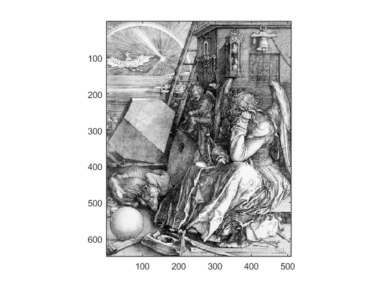
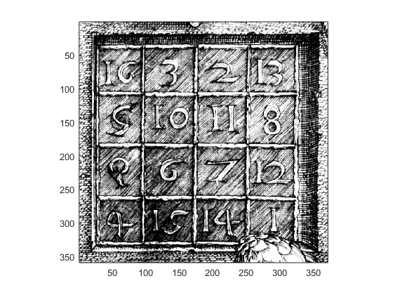
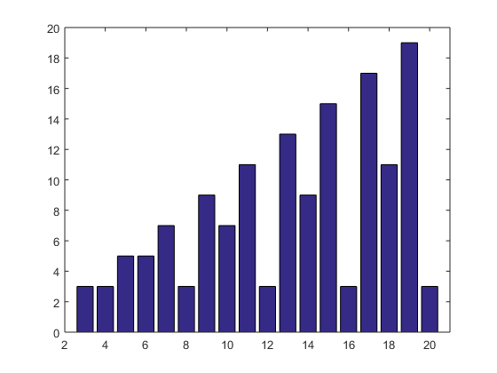
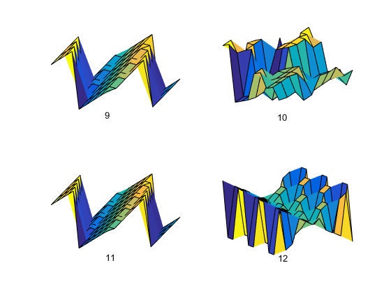

Contents
Magic Squares Chapter Recap
This is an executable program that illustrates the statements introduced in the Magic Squares Chapter of "Experiments in MATLAB". You can access it with
magic_recap edit magic_recap publish magic_recap
Related EXM programs
magic ismagical
% Copyright 2014 Cleve Moler
A Few Elementary Array Operations.
format short A = magic(3) sum(A) sum(A')' sum(diag(A)) sum(diag(flipud(A))) sum(1:9)/3 for k = 0:3 rot90(A,k) rot90(A',k) end
A =
8 1 6
3 5 7
4 9 2
ans =
15 15 15
ans =
15
15
15
ans =
15
ans =
15
ans =
15
ans =
8 1 6
3 5 7
4 9 2
ans =
8 3 4
1 5 9
6 7 2
ans =
6 7 2
1 5 9
8 3 4
ans =
4 9 2
3 5 7
8 1 6
ans =
2 9 4
7 5 3
6 1 8
ans =
2 7 6
9 5 1
4 3 8
ans =
4 3 8
9 5 1
2 7 6
ans =
6 1 8
7 5 3
2 9 4
Durer's Melancolia
clear all close all figure load durer whos image(X) colormap(map) axis image
Name Size Bytes Class Attributes X 648x509 2638656 double caption 2x28 112 char map 128x3 3072 double
Durer's Magic Square
figure
load detail
image(X)
colormap(map)
axis image
A = magic(4)
A = A(:,[1 3 2 4])
A =
16 2 3 13
5 11 10 8
9 7 6 12
4 14 15 1
A =
16 3 2 13
5 10 11 8
9 6 7 12
4 15 14 1
 Magic Sum
n = (3:10)';
(n.^3 + n)/2
ans =
15
34
65
111
175
260
369
505
Odd Order
n = 5
[I,J] = ndgrid(1:n);
A = mod(I+J+(n-3)/2,n);
B = mod(I+2*J-2,n);
M = n*A + B + 1
n =
5
M =
17 24 1 8 15
23 5 7 14 16
4 6 13 20 22
10 12 19 21 3
11 18 25 2 9
Doubly Even Order
n = 4
M = reshape(1:n^2,n,n)';
[I,J] = ndgrid(1:n);
K = fix(mod(I,4)/2) == fix(mod(J,4)/2);
M(K) = n^2+1 - M(K)
n =
4
M =
16 2 3 13
5 11 10 8
9 7 6 12
4 14 15 1
Rank
figure
for n = 3:20
r(n) = rank(magic(n));
end
bar(r)
axis([2 21 0 20])
 Ismagical
help ismagical for n = 3:10 ismagical(magic(n)) end
ISMAGICAL Check various magic aspects of square matrices.
m = ismagical(A) is a logical vector with four elements indicating:
m(1) = Semimagic: all column sums and all row sums are equal.
m(2) = Magic: semimagic and both principal diagonals have the same sum.
m(3) = Panmagic: magic and all the broken diagonals have the same sum.
m(4) = Associative: all pairs of elements on oppositve sides of the
center have the same sum, which must be twice the center value.
ans =
1 1 0 1
ans =
1 1 0 1
ans =
1 1 0 1
ans =
1 1 0 0
ans =
1 1 0 1
ans =
1 1 0 1
ans =
1 1 0 1
ans =
1 1 0 0
Surf Plots
figure
for n = 9:12
subplot(2,2,n-8)
surf(rot90(magic(n)))
axis tight off
text(0,0,20,num2str(n))
end
set(gcf,'color','white')
